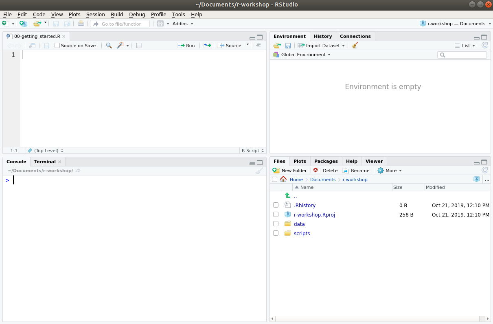

Getting started
- Learn basic programming techniques
Libraries and functions
Libraries
Functions
Libraries
Functions
Purpose and aim
Using a programming language to analyse, visualise and communicate your data has many advantages over point-and-click programmes.
- it documents analysis steps with code, aiding reproducibility
- allows scaling to large data
- generates high quality graphics that can be adjusted
Introduction
The term “R” is used to refer to both the programming language and the software that interprets the scripts written using it.
RStudio is an additional software that makes it easier to interact with R by providing tools that make programming easier. To function correctly, RStudio needs R and therefore both need to be installed on your computer.
Some advantages of using R for your data analysis include:
- Analysis steps are documented with code, allowing for greater reproducibility.
- There are thousands of packages (extensions) available, making R a very flexible and powerful tool, for a wide range of applications.
- Analysis can be scaled to large data.
- Can generate a wide range of high-quality graphics for data visualisation.
- There is a large community of contributors.
- It’s free and open source.
The RStudio Interface
RStudio is divided into four “panes”, illustrated below. The default layout is:
- Top Left - Source: this is where you edit your R scripts (this panel might not appear until you create a script, which we demonstrate below).
- Bottom Left - Console: where R will execute commands and print results.
- Top Right - Environment: this will show you which objects you create while working with R.
- Bottom Right - Files/Plots/Packages/Help: several tabs that allow you to navigate your files, view plots, view installed packages and search help files.

Getting set up
It is good practice to keep a set of related data, analyses, and text self-contained in a single folder called the working directory (usually a folder on your computer where you have all the files relating to a project you’re working on). The working directory is an important concept to understand. It is the place where R will look for and save files.
All of the scripts within this folder can then use relative paths to files. Relative paths indicate where inside the project a file is located (as opposed to absolute paths, which point to where a file is on a specific computer). Working this way makes it a lot easier to move your project around on your computer and share it with others without having to directly modify file paths in the individual scripts.
RStudio provides a helpful set of tools to do this through its Projects interface, which not only creates a working directory for you but also remembers its location (allowing you to quickly navigate to it). The interface also preserves custom settings and open files to make it easier to resume work after a break.
Creating a new project
Usually, you will already have a folder on your computer for your project, for example with some data you collected or downloaded from the web.
To create an R Project within the r-workshop directory:
- From the upper menu on RStudio click: File > New project > Existing directory.
- Click the browse… button and navigate and open your
r-workshopfolder. - Click on Create project. This will initiate a fresh R session.
From now on, whenever you want to work on this project, open the the Rproj file that was created in your r-workshop folder.
This will ensure your working directory is automatically set correctly. This also means that you can move the project folder to a different location or even different computer. As long as you open the Rproj file, your working directory will be set correctly.
If you need to check your working directory, you can run getwd() on the console. If for some reason your working directory is not what it should be, you can change it in the RStudio interface by navigating in the file browser (bottom-right panel) to where your working directory should be, clicking on the blue gear icon More > Set As Working Directory.
Alternatively, you can run setwd("/path/to/working/directory") on the console to reset your working directory. However, your scripts should not include this line, because it will fail on someone else’s computer.
Writing code
Now that we have a project, let’s run our first commands in R.
On the console panel, type:
1 + 100And R will print out the answer, with a preceding [1]. Don’t worry about this for now, we’ll explain that later. For now think of it as indicating output.
Any time you hit return and the console shows a “+” instead of a “>”, it means it’s waiting for you to complete the command. If you want to cancel a command you can hit Esc and RStudio will give you back the > prompt.
Creating scripts
So far, we’ve been typing these commands directly in the R console. However, if we closed RStudio and later wanted to recreate these operations, there would be no record of them anywhere.
In practice, we should always write our code in a script, which is a plain text document with our commands written in it. To create a new R script go to File > New File > R Script.
This will open a panel on the top-left. This is a text editor, which in RStudio does some syntax highlighting (it colours the code) to help read the code.
As you’re adding code to the script, you can run it interactively on the console by pressing the shortcut Ctrl+Enter.
Installing and loading packages
Additional packages can be installed to extend the functionality of R. Most packages are available in a central repository called CRAN and can be installed from within R using the install.packages() function.
For example, to install (or update) the tidyverse package, you would run the following command on the console:
install.packages("tidyverse")Because the install process accesses the CRAN repository, you will need an Internet connection to install packages.
After this, you can then load the package to use it in your analysis. For the example above, we would do that as follows with the library() function:
library(tidyverse)Key points
- We use a working directory to organise our projects
- Using scripts we’re able to keep a record of our code
- Packages or libraries give additional functionality